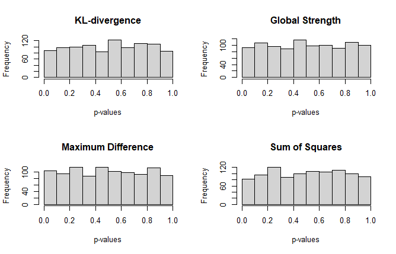
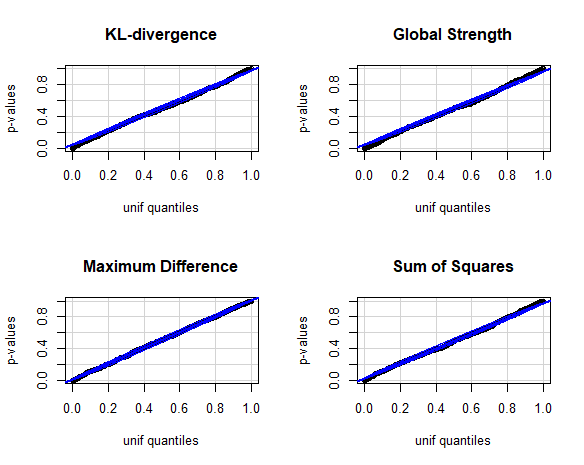

The GGMncv network comparison test was vetted by investigating the distribution of \(p\)-values under the null hypothesis, which should be uniform. If so, this would indicate that the implementation is correct, in so far as providing error rates at the nominal level (i.e., \(\alpha\)).
On the other hand, power to detect differences was not investigated compared to the implementation in the R package NetworkComparisonTest (Van Borkulo et al. 2017). This could be an interesting future direction.
Following the approach of Jankova and Van De Geer (2015), the de-sparsified glasso estimator can be computed without data driven selection of the regularization parameter. This is accomplished by setting \(\lambda = \sqrt(log(p)/n)\). The advantage is that this will be very (very) fast. That speed, however, should not come at the cost of a compromised test statistic under the null.
The following looks at the default test statistics using desparsified = TRUE (the default). Note for actual use, iter should be set to, say, at least 1,000 and perhaps even 10,000 to get a stable \(p\)-value.
library(GGMncv)
library(car)
main <- gen_net(p = 10, edge_prob = 0.1)
sims <- 1000
p_st <- p_max <- p_kl <- p_sse <- rep(0, sims)
for(i in 1:sims){
y1 <- MASS::mvrnorm(n = 500,
mu = rep(0, 10),
Sigma = main$cors)
y2 <- MASS::mvrnorm(n = 500,
mu = rep(0, 10),
Sigma = main$cors)
fit <- nct(y1, y2,
desparsify = TRUE,
cores = 1,
iter = 250,
penalty = "lasso",
update_progress = 2,
penalize_diagonal = FALSE)
p_kl[i] <- fit$jsd_pvalue
p_st[i] <- fit$glstr_pvalue
p_max[i] <- fit$max_pvalue
p_sse[i] <- fit$sse_pvalue
}The following distribution should be uniform. Because I only used 1,000 simulations, however, there might be some slight departures.
par(mfrow=c(2,2))
hist(p_kl, main = "KL-divergence",
xlab = "p-values")
hist(p_st, main = "Global Strength",
xlab = "p-values")
hist(p_max, main = "Maximum Difference",
xlab = "p-values")
hist(p_sse, main = "Sum of Squares",
xlab = "p-values")
That appears really close! Also note a seed was not set, so if the above code is run, the results could be a bit different.
Next is a qqplot. Here the \(p\)-values should fall along the line that corresponds to the quantiles calculated from a theoretical, in this case uniform, distribution.
par(mfrow=c(2,2))
car::qqPlot(
p_kl,
distribution = "unif",
ylab = "p-values",
id = FALSE,
main = 'KL-divergence'
)
car::qqPlot(
p_st,
distribution = "unif",
ylab = "p-values",
id = FALSE,
main = "Global Strength"
)
car::qqPlot(
p_max,
distribution = "unif",
ylab = "p-values",
id = FALSE,
main = "Maximum Difference"
)
car::qqPlot(
p_sse,
distribution = "unif",
ylab = "p-values",
id = FALSE,
main = "Sum of Squares"
)
Again, that looks pretty good.
For custom test stats (e.g., provided to FUN), it is really informative to investigate the the p-value distribution. Perhaps there are some that are overly conservative, which would indicate the test is not very powerful.
Although not included here, setting desparsified = FALSE was also investigated. The results were much the same, but took a lot longer (because, for each permutation, the tuning parameter is selected).